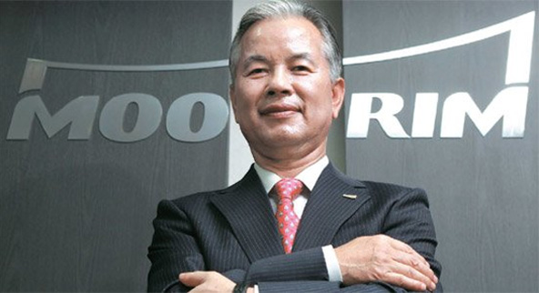

인사말
" 무림페이퍼를 찾아주신 여러분을 진심으로 환영합니다. "
- 종이는 문화를 담는 그릇입니다.
- 무림은 1956년 설립 이래 반세기가 넘게 한국의 제지산업을 선도해오면서 단순히 종이를 만든다는 생각보다 인류의 문화발전에 이바지한다는 사명감으로 일해왔습니다. 무림은 우리나라의 문화산업이 꽃 필 수 있도록 지난 1959년 국내 최초로인쇄용지 대량생산시대를 열었고, 1974년에는 국내에서 유일하게 펄프를 생산하면서 국내 제지산업이 발전하는데 밑거름이 되었습니다.
- 또한 지난 2011년 5월에는 국내에서는 최초이자 유일한 펄프-제지 일관화공장을 완공하면서 한국의 제지산업이 한 단계 도약할 수 있는 제지역사의 한 획을 그었습니다.
- 무림은 지구의 환경을 먼저 생각하고 보호하는 친환경기업입니다.
- 제지산업은 천연림을 베어 종이를 만든다는 오해가 보편적입니다. 그러나 이와는 달리 제지산업은 나무를 심고 가꾸는 조림사업에 적극적이고 또한 순환 경작을 통해 조림한 조림목과 간벌목을 이용해 펄프와 종이를 만들기 때문에 오히려 조림을 통해 이산화탄소를 흡수하고 있어 어느 산업보다도 친환경적입니다.
- 특히, 무림은 불법으로 벌채된 나무를 전혀 사용하지 않으며, 세계산림관리협의회가 인증한 FSC 인증 목재와 펄프만을 사용하고 있습니다. 또한, 최근 완공한 일관화공장은 기름 한 방울 쓰지 않고 종이를 생산하는 친환경 녹색공장이기도 합니다.
- 회사 홍보의 장 이 아닌 의사소통의 장이 되길 바랍니다.
- 무림의 홈페이지를 통해 무림을 조금 더 알고 이해되기를 바라며, 여러분의 의견이 무림에게 전해지는 소통의 장이 되기를 진심으로 바랍니다.무림 홈페이지는 일방적인 홍보의 장이 아닌 여러분과 의사소통의 장이 되도록 하겠습니다. 여러분의 많은 관심과 참여를 바랍니다. 감사합니다.